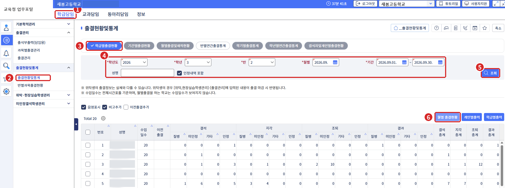
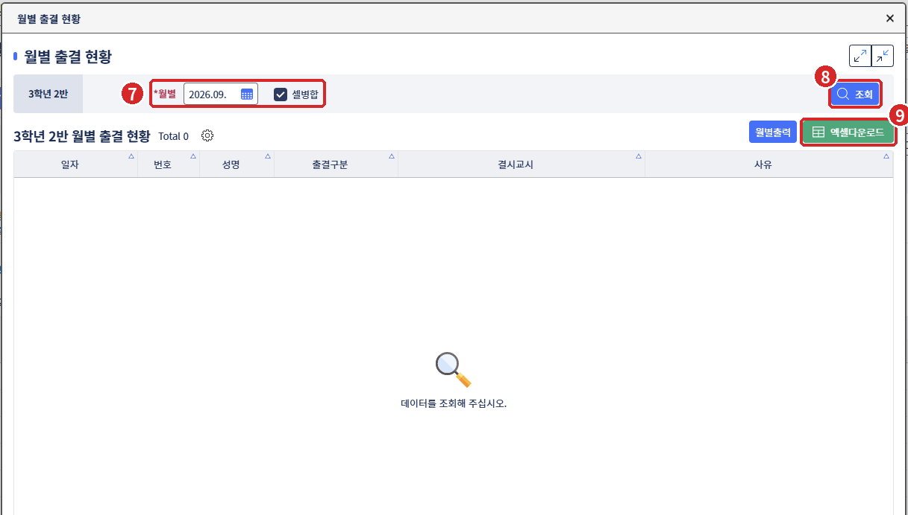

처음 쓰시나요? 이렇게 하면 됩니다
- 1나이스에서 엑셀 받기학급담임 → 출결현황및통계 → 월별 출결현황 → 엑셀다운로드
- 2엑셀 넣기아래 「엑셀 파일 선택」에 넣으면 학생별로 필요한 서류가 정리됩니다
- 3서식 출력결석신고서·체험학습 서식이 이름·날짜·담임 확인까지 채워져 나옵니다
- 4받은 서류 확인받은 서류를 표에서 체크하거나, 모아서 스캔한 PDF를 넣으면 빠진 것을 찾아 줍니다
- 5체크리스트 확인 후 제출오른쪽 월별 체크리스트가 모두 「확인」이 되면 서류를 제출하세요
1. 엑셀 넣기
| 출결 건수00명 | 서류 완료0 / 0필요한 건 중 | 미제출0건 | 사유 선택0건 | 규정 확인0건 |
2. 서식 출력
받은 파일을 열면 인쇄 창이 바로 뜹니다. 학생별 서식은 아래 표의 「서식」을 누르세요.
파일 내려받기는 claude.ai 화면에서 동작합니다.
월별 제출 체크리스트
출결 한눈에 보기 칸을 누르면 그 학생 서식이 열립니다
결질병결미인정결기타결출석인정| 서류 완료 서류 미제출 사유 선택 서류 없음|결 결석 · 지 지각 · 조 조퇴 · 과 결과
3. 건별 점검
같은 종류로 이어진 결석은 한 건으로 묶었습니다. 서류를 받으면 체크만 하시면 됩니다. 「서식」을 누르면 학생 정보와 담임 확인서(보호자 연락: 결석 당일 08:30)가 채워진 서식이 나옵니다.
스캔 PDF로 빠진 서류 찾기
다 모은 서류를 한 번에 스캔해서 넣으면, 먼저 넣은 나이스 엑셀을 기준으로 학생마다 필요한 서류가 다 있는지, 서류에 적힌 기간이 나이스 기록과 같은지, 체험학습 사진이 날짜 수만큼 있는지, 출결현황에 담임 도장이 찍혔는지 바로 알려 줍니다. AI 없이 이 컴퓨터 안에서만 처리합니다.
쪽별 인식 결과
이 앱에서 출력한 서식은 인쇄된 이름·날짜로 학생을 찾고, 표 모양을 기준으로 빈칸을 확인합니다. 손글씨는 잘 못 읽어요. 「확인 필요」 쪽만 사진을 눌러 크게 보고 서류 종류와 학생을 골라 주세요.
나이스에서 「월별 출결 현황」 엑셀 받기
- 학급담임 메뉴를 누릅니다.
- 왼쪽 메뉴에서 출결현황및통계 → 출결현황및통계를 엽니다.
- 학급별출결현황 탭을 고릅니다.
- 학년도·학년·반·월별·기간을 확인하고 인정내역 포함에 체크합니다.
- 조회를 누릅니다.
- 표 오른쪽 위 월별 출결현황 버튼을 누릅니다.

- 새 창에서 월별을 확인합니다. 셀병합은 체크된 그대로 둡니다.
- 조회를 누릅니다.
- 엑셀다운로드를 누르고, 받은 파일을 「출결 서류 점검」 탭에 넣으면 끝입니다.

엑셀에 학생 이름이 있으면 서식에 자동으로 들어갑니다. 파일은 브라우저 안에서만 읽고 어디에도 저장하지 않습니다.
출결 처리 규정
기본 설정
마지막 결석일 다음 날부터 셉니다 (규정 제2조: 결석한 날부터 5일 이내)
연락 일시는 결석 첫날 08:30으로 채웁니다
요일별 수업시수 (체험학습 반일 단위)
이어진 결석을 한 건으로 묶을 때 씁니다
사유별 필요 서류
예시 자료
체크한 내용과 제출일은 이 브라우저에만 저장됩니다. 다른 컴퓨터에서는 새로 체크해야 합니다. 사진은 저장되지 않으니 넣은 김에 출력하세요.